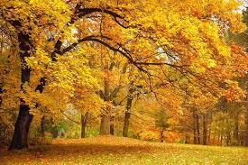
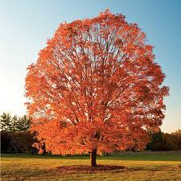
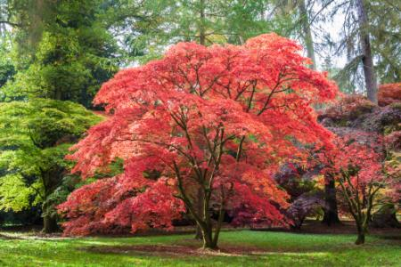
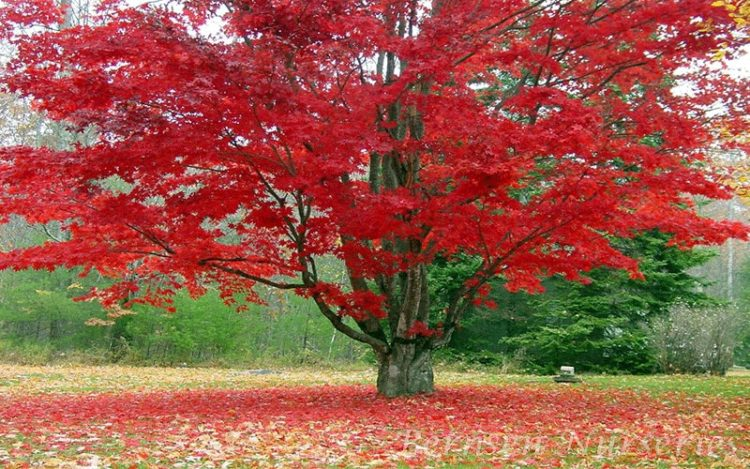
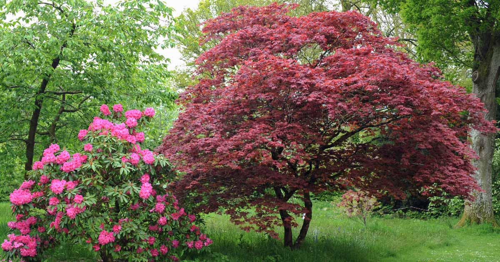

Maple, (Acer), any of a large genus (about 200 species) of shrubs or
trees in the family Sapindaceae, widely distributed in the North
Temperate Zone but concentrated in China. Maples constitute one of the
most important groups of ornamentals for planting in lawns, along
streets, and in parks. All maples bear pairs of winged seeds, called
samaras or keys. The leaves are arranged oppositely on twigs. Many
maples have lobed leaves, but a few have leaves separated into
leaflets.A few different species of maple trees are described below
Japenese Maple
Japenese Maple
is common maple found in many landscapes is the Japanese maple (Acer
palmatum). Japanese maples offer an almost infinite variety of forms
due to the many cultivars and are hardy in USDA zones 5 through 8.
They can be trained into various shapes, left to grow on their own, or
any combination in between, and do well inside containers. A typical
Japanese maple can grow to be 25 feet tall, with some cultivars
growing as large shrubs. They prefer rich, well-drained soil and
partially shady locations.
Norway Maple
The majestic
Norway maple
(Acer platonoides) is frequently planted along city streets, as shade
trees in front of homes, and in parks nationwide. It's a hardy and
vigorous growing tree that can withstand all the indignities of being
planted next to a road, as well as extreme heat and cold, droughts,
car exhaust fumes, and road salt near their roots. The tree is
considered invasive in some locations due to its widespread dispersal
of seeds. Plant Norway maples in USDA zones 4 to 7 in full sun or
partially shady areas. They can grow up to 50 feet tall and they do
spread out, so leave plenty of room between the Norway maple and
nearby structures. They're very drought tolerant.
Sugar Maple
The native and deciduous
Sugar Maple
(Acer saccharum) is responsible for the production of mouth-watering
maple syrup and is hardy in USDA zones 3 through 8. Known for its
glorious fall colors, the leaves turn spectacular shades of bright
orange, yellow and red. This is also one of the tallest maples,
growing up to 120-feet tall and 50-feet wide, so they need plenty of
room to spread out. It grows best in full to partial sun and in a
variety of well-drained soils, but requires frequent water especially
during hot and dry weather.
Paperback Maple
Paperbark maple
(Acer griseum) gets its name from the rich, coppery-brownish bark that
peels along the trunk and branches year-round making the tree an
eye-catching specimen. The maple can take years to reach its mature
height of 25-feet. Most trees have multiple trunks forming low to the
ground, but can be pruned to have a single trunk. It has a deciduous
habit and during fall the foliage turns a brilliant shade of red.
Paperbarks are hardy in USDA zones 5 through 8 and grow in a sunny or
partially shady location in well-drained, fertile soil.
Red Maple
Red Maple (Acer
rubrum) are native to eastern portions of the U.S. and tolerate warmer
conditions than many maple types, being hardy in USDA zones 3 through
9. The tree quickly reaches a mature height of 75-feet and makes an
attractive shade or specimen tree. Due to its habit of forming surface
roots, plant the tree away from house foundations or sidewalks.
Deciduous red maples are one of the first trees to announce the coming
of fall and puts on a riot of color with its red foliage.As with most
maples, it is susceptible to a host of diseases and pests.
Photo Gallery




